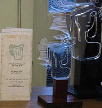
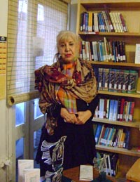

پذيرش > اخبار > تندیس هایی که در خانه ماندند

 تندیس هایی که در خانه ماندند تندیس هایی که در خانه ماندند
16 اسفند 1388 - گزارش ششمین دوره ی اهدای جایزه کتاب صدیقه دولت آبادی - نسخه قابل چاپ

مراسم اهدای تندیس صدیقه دولت آبادی، در روز شنبه 15 اسفند و طبق روال شش سال گذشته در آستانه روز جهانی زن برگزار شد، اما اینبار بر خلاف سالهای پیشین در یک جمع خصوصی و مانند پارسال بدون انتخاب کتابی به عنوان برنده ی تندیس ها.
در ابتدای مراسم شهلا لاهیجی، ناشر و از اعضای هیئت امنای کتابخانه صدیقه دولت آبادی، ضمن خوشامد گویی و ابراز تاسف از اینکه به خاطر فشارهای امنیتی نتوانستند مراسم را در شرایط بهتری برگزار کنند، روز زن، هفته زن و همچین ماه زن در تقویم ایرانی را تبریک گفت. وی با اشاره به وقایع بعد از انتخابات، تاکید کرد که این زنان بودند که پیشگام در جریان مبارزات بودند و خواهند بود و با ابراز امیدواری نسبت به آینده گفت: " من مطمئنم که دوران های بد می گذرند. ما سه هزار سال در تاریخ مانده ایم، هنوز زبانمان را حفظ کرده ایم، گربه ی ایران را حفط کرده ایم و باز همچنان هستیم، خواهیم بود، پیروزی را خواهیم دید و زنان سر بلند ایران همچنان سر بلند خواهند ماند."
سپس منیژه نجم عراقی، از اعضای هیئت داوران مطالعات زنان، گزارش این هیئت را ارائه داد. وی گفت:" مجموعهي كتابهاي تأليفي مرتبط با مسايل زنان در سال 87 كه كتابخانه صديقه دولتآبادي براي بررسي گردآوري كرده بود از هر دو جنبهي كميت و كيفيت اُفتي فاحش نشان ميداد؛ در مواردی که به مسايل نظري پرداخته شده بود به نظر ميرسيد نویسنده با نظریههایی که معرفي ميكند آشنايي ندارد و تنها گلچيني از كتابهاي مرجع فراهم آورده كه بيشتر جنبهي تزييني دارند. نكتهي تأسفبار اين كه از اين ميان چندین کتاب تأليف استادان دانشگاه يا پایاننامههای دانشگاهی بود، اما با کمال تعجب نهتنها انسجامي در مطالب ديده نميشد و كتابها بيشتر شكل مجموعه مقاله داشتند، بلكه اشتباهات فراواني در ارائه آمار، ارجاعات و منابع در آنها وجود داشت. البته باید اشاره کرد پایاننامههایی که به صورت کتاب درآمدهاند دستكم از نظر نگارش اشکالات کمتری نشان ميدهند، اما گويي نه دانشجوياني كه این مطالب را نوشتهاند رويكرد جنسيتي دارند و نه در استادان ناظر يا مشاور آنها اُنس يا احاطهيي بر حوزهي نظريِ مورد بحث وجود دارد. حتی گاه به نظر ميرسد بيشتر رد کردن مفاهيم و نظریههای جنسیتی مد نظر بوده است. “
او با ذکر این نکته که در برخي از كتابهاي بررسيشده نكات مثبت و قابلتوجهي هم وجود دارد، اضافه کرد :" اما به دليل ساختار پراكنده و نامنسجم مطالب، ضعف استدلال، يا تازه نبودن رويكرد به موضوع، تأثير آنها بر مخاطب اندك است. مهمتر از همه اين كه در هيچ يك از اين كتابها خبري از بحث تحلیلی نيست. "
نجم عراقی با اشاره به اینکه به نظر ميرسد زنجیرهيی نظاممند براي جلوگيري از طرح مباحث جنسيتي وجود دارد اینطور ادامه داد:" از يك سو، رشته مطالعات زنان که عملاً منبع اصلی برای تربیت افرادی با رویکرد جنسیتی بود از درون تهي شده است و تنها بروندادهایی از مطالعات زنان و رشتههای مشابه ارائه ميدهد که به جاي توجه به جنسيت به مفهوم سنتيِ جنس ميپردازند. و از سوي ديگر، تنها كتابهايي اجازه چاپ مييابند كه ديدگاههاي جنسيتي را نقد و رد کنند. از اين گذشته، بسته شدن نشريات مربوط به زنان (از جمله ماهنامهي زنان) كه در آنها مقالات جدي و مفيد به چاپ ميرسيد و ندادن مجوز چاپ فصلنامه و مجلات دیگر نیز به تکمیل اين زنجیره کمک ميكند و مانع از انتشار اطلاعات و نظرات تازه ميشود."
اعضای هیئت داوران امسال در بخش مطالعات زنان شهلا اعزازي، شيوا شكاري، فرخ قرهداغي، فيروزه مهاجر، منيژه نجمعراقي، و نسترن موسوي (مشاور) هستند و مطابق آنچه در بروشور این برنامه ذکر شده است، 11 کتاب به مرحله ی دوم راه پیدا کردند بوده که در نهایت هیچ کدام انتخاب نشدند. در پایان ارائه گزارش گروه مطالعات زنان، کتابخانه صدیقه دولت آبادی اعلام کرد که دلایل رد کتابها و نقدهای هیئت داوران در اسناد کتابخانه موجود هستند و علاقمندان می توانند برای مطالعه آنها به آنجا مراجعه کنند.
در ادامه منصوره شجاعی، از گروه داوران ادبیات داستانی زنان، به نمایندگی از طرف این هیئت درباره ی جایزه صدیقه دولت آبادی و اهداف آن گفت: "ضرورت بررسی ادبیات داستانی زنان در ایران از آن جهت است که اعتراض به تبعیض های جنیستی نیز به تصویر کشیده شود . بررسی رویکرد های زنانه وچگونگی حضور زنان در ادبیات از سویی و تشویق زنان نویسنده برای خلق آثار ادبی ماندگار از اهداف جایزه صدیقه دولت آبادی است." او سومین سال داوری ادبیات را سالی پر فزار و نشیب دانست و گفت:" هرسال از مهرماه شروع میکردیم امسال نظر به شرایط اجتماعی و وقایعی که گستره آن حوزه های فرهنگی ، ادبی و روند کار نهادهای مردمی را نیز تحت تاثیر قرار داه بود با دو ماه تاخیر ازآذرماه شروع کردیم."
او همچنین برخی مشکلات پیش آمده برای گروه داوری امسال را چنین برشمرد: "بحران های اجتماعی و فرهنگی که سال گذشته تولید ونشر آثار مورد بررسی داوران را تحت الشعاع قرا ر داده بود امسال با شدت بیشتر کل جامعه و به ویژه زنان و فعالیت های آنان را تحت تاثیر قرارداد ، تاثیر این وقایع برحیطه داوری نمی توانست بحث داوری را در جزیره ای آرام و به دوراز طوفان های سهمگینی که جامعه را در می نوردید در پناهی امن و بی اعتنا به تنگناها به پیش برد . افزون برآن ، وقایع بحرانی دی ماه و بهمن ماه سال جاری ، و تاثیر پذیری جریان های اجتماعی ، فرهنگی و ادبی ازآن به ویژه در حلقه داوری از جمله سفرها و حذرها ی اجباری برخی از داوران ،و واهمه و نگرانی از انجام هرگونه فعالیت خاص زنان موجبات وقفه در روند داوری را فراهم ساخت. از اواسط بهمن ماه که داوری از پس این دوران فترت فعالیت خودرا از سر گرفت ، نظر به سفرهای دور برخی از اعضا و در "دسترس" نبودن برخی دیگر، ادامه بحث ها درفضای سایبری ادامه یافت . نتیجه تمامی بحث ها و تبادل نظرها موجب تبدیل پروسه داوری امسال به "دوسالانه" جایزه ادبیات داستانی زنان شد و اعلام نتایج نهایی به سال آینده موکول شد."
شجاعی توجه به جوهره ی نقد فمینیستی و لزوم بررسی آثار جدا از اتفاقات روز ، موانع موجود برای تشکیل جلسات داوری، معضل سانسور و تنوع بیشتری که پروسه داوری دوسالانه در اختیار هیئت داوران قرار می دهد را از دلایل دو سالانه شدن این جایزه اعلام کرد. او در پایان از نغمه ثمینی – بنفشه حجازی – آزاده داوچی – منصوره شجاعی- صبا واصفی به عنوان داوران و مهسا محب علی –الهام میاحی به عنوان مشاوران این بخش نام برد.

در پایان مراسم ، سیمین بهبهانی ضمن گلایه از وصعیت کتاب در ایران گفت:" من با اینکه دیگر چشمم خوب نمی بیند، اما می بینم دیگر هیچ اثر ماندگاری و قابل مطالعه ای نداریم. سانسور علاوه بر اینکه خودش قطع می کند، یک دستگاه هم در مغز نویسنده می گذارد. اینها باعث می شود ادبیات مسخ شوند. من در مراجعه به وزارت ارشاد به خاطر چاپ برخی از آثارم به مسوولین گفتم برخی از اینها متعلق به 30 سال پیش هستند که اگر دینامیت هم بوده تا حالا نم کشیده بود." وی سپس در ادامه گفت:" آثار کنونی من همه تلخ هستند اما امروز به مناسبت روزجهانی زن یکی از اشعارم را که شاد است می خوانم ." این مراسم با شعر خوانی سیمین بهبهانی پایان یافت.
ارسال به
بالاترین
،
توییتر
،
فریندفید
،
فیسبوک
در همين بخش :
 پروین ذبیحی برنده جایزه حقوق بشری سازمان غيردولتى اتريشى سودويند شد پروین ذبیحی برنده جایزه حقوق بشری سازمان غيردولتى اتريشى سودويند شد
پخش کارت پستال و بروشور در روز جهانی زن در تهران
تمدید زمان برای امضای بیانیهی جمعی از فعالان زن به مناسبت هشت مارس
مجوزی که در نطفه خفه شد
بیش از 2000 امضا در اعتراض به تبعیض های آموزشی به مجلس تحویل داده شد
ديگر بخش ها :
طرح یک میلیون امضا
|
مقالات
|
سایت نوشته ها
|
اخبار
|
گزارش كمپين
|
گفت و گو
|
علیه سکوت
|
كوچه به كوچه
|
نامه های شما
|
گزارش ویژه
|
گفتگو با اعضا
|
ویژه سالگرد کمپین
|
تصویر برابری
|
دل آرام علی
|
تریبون
|
مقالات
|
تاریخ شفاهی
|
خارج از چارچوب
|
کتابخانه
|
درباره کمپین
|
کمپین در شهرها
|
کمپین در بند
|
صدای تغییر
|
ویژه 22 خرداد
|
لایحه حمایت از خانواده
|
گالری
|
عشا مومنی
|
امیر یعقوبعلی
|
خدیجه مقدم
|
راحله عسگری زاده و نسیم خسروی
|
پروین اردلان،جلوه جواهری، مریم حسین خواه، ناهید کشاورز
|
زینب پیغمبرزاده
|
سعیده امین، سارا ایمانیان، محبوبه حسین زاده، ناهید کشاورز و همایون نامی
|
احترام شادفر
|
نسیم سرابندی زاده،فاطمه دهدشتی
|
وبلاگ مهمان
|
پرونده خرم آباد
|
دستگیری ها
|
مریم مالک
|
پرستو اللهیاری
|
مهرنوش اعتمادی
|
سمیه رشیدی
|
Other Languages
|
همراهان
|
«فراخوان کمپین ده روز با بهاره هدایت»
| English
|